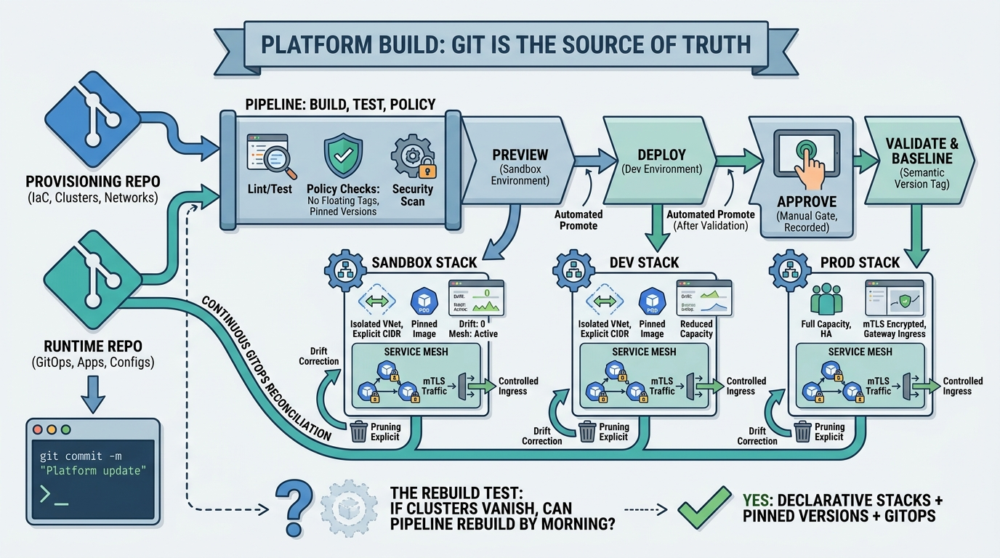

Reference Implementation
Platform Creation: Environments, GitOps, and the Mesh

Image generated by Google Gemini (gemini-3-pro-image-preview)
Reference Implementation

Image generated by Google Gemini (gemini-3-pro-image-preview)